4.19 轨道定域化 (Orbital localization) 分析
注
本节大部分内容也可见我的博客文章“Multiwfn 轨道定域化功能的使用以及与 NBO 和 AdNDP 分析的比较”(http://sobereva.com/380，中文)。
轨道定域化是一种非常强大而有用的技术，它可以将通常表现出高度离域特征的正则分子轨道转化为定域形式，即定域分子轨道 (localized molecular orbital, LMO)。LMO 与化学键、孤对电子等许多经典化学概念密切相关，因此可用于分析和揭示许多有化学意义的问题。阅读本节之前，请先阅读3.22 节以掌握一些基础知识。其他章节中的一些例子，如4.8.4 节和 4.100.22 节中的例子，也用到了轨道定域化功能。
注意： 当大量使用弥散函数时，不建议使用默认的轨道定域化方法，即基于 Mulliken 布居的 Pipek-Mezey 方法 (PM-Mulliken)，否则结果可能具有误导性。如果必须使用弥散函数，应改用基于 Becke 布居的 Pipek-Mezey 方法 (PM-Becke) 或 Foster-Boys 方法，各种轨道定域化方法的优缺点见3.22 节。
4.19.1 用 Pipek-Mezey 方法定域 1,3-丁二烯的分子轨道
本节以反式-1,3-丁二烯为例说明 Multiwfn 轨道定域化分析的用法。
进行 LMO 分析的基本步骤
输入文件为 examples\butadiene.fch，由 B3LYP/6-31G** 水平得到。你可以先通过主功能 0 观察它的分子轨道，会发现所有分子轨道都高度离域，没有一个与化学键理论的经典概念直接对应。现在我们进行轨道定域化，将它们转化为更具化学意义的轨道。启动 Multiwfn 并输入
examples\butadiene.fch
19 // Orbital localization. By default, Pipek-Mezey localization method based on Mulliken population is used
2 // Perform localization for both occupied and unoccupied MOs由于该体系很小，定域化迭代立即收敛，并打印出所得轨道的主要特征。此后 Multiwfn 自动将 LMO 导出为当前目录下的 new.fch 并加载它。此时，内存中的轨道系数已完全更新为 LMO。你可以用不同方式表征它们。我们进入主功能 0 观察这些轨道，会发现所有轨道都表现出很强的定域特征，尤其是占据轨道。下面是涉及 C6-C8 的三个 LMO 的截图，前两个是占据轨道，分别对应 σ 键和 π 键；第三个是非占据轨道，可大致判断为反 π 键轨道。
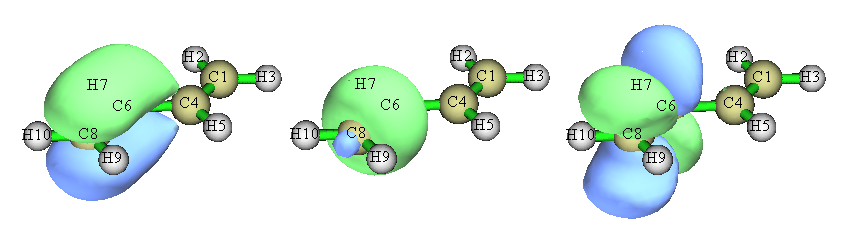
计算 LMO 能量
可以计算 LMO 的能量，如下所示。启动 Multiwfn 并输入
examples\butadiene.fch
19 // Orbital localization
-4 // Allow Multiwfn to generate and print energy for LMOs
1 // Evaluate energies of the LMOs using the Fock matrix generated by MO energies and coefficients via F=SCEC^-1 relationship
2 // Localize both occupied and unoccupied orbitals计算完成后，Multiwfn 计算 LMO 的能量并按能量从低到高排序。你可以在屏幕上找到所有 LMO 的能量。最高占据与最低非占据 LMO 的信息如下所示
14 Energy: -0.2750728 a.u. -7.4851 eV Type: A+B Occ: 2.0
15 Energy: -0.2750728 a.u. -7.4851 eV Type: A+B Occ: 2.0
16 Energy: 0.2185911 a.u. 5.9482 eV Type: A+B Occ: 0.0
17 Energy: 0.2185913 a.u. 5.9482 eV Type: A+B Occ: 0.0请在主功能 0 中绘制这些轨道，尝试判断它们的特征。
注
顺便一提，也可以基于从外部文件载入的 Fock 矩阵计算 LMO 的能量(详见附录 7)，如果无法基于分子轨道能量和系数成功生成 Fock 矩阵，这是唯一的选择。例如，Fock 矩阵可以从 NBO .47 文件载入；对当前体系要实现这一点，可以进入主功能 100 并选择子功能 2，再选择选项 10 将当前体系导出为 Gaussian 输入文件。然后适当修改输入文件，要求 Gaussian 输出 .47 文件，并确保计算水平与 examples\butadiene.fch (B3LYP/6-31G**) 完全一致。准备好的输入文件已提供为 examples\butadiene_47.gjf。用 Gaussian 运行它，你会在 C: 盘根目录下找到所得的 BUTADIENE.47(该文件已提供为 examples\butadiene.47)。在主功能 19 中，选择选项 -4 允许 Multiwfn 计算 LMO 能量后，若选择子选项“2 Evaluate, loading Fock matrix from a file”并输入 .47 文件的路径，.47 文件中记录的 Fock 矩阵将被载入，并在适当时候用于计算 LMO 轨道能量。
显示所有 LMO 的中心位置
可以将所有生成的 LMO 的中心位置可视化，从而立即了解 LMO 的分布。这里我说明如何实现。
重新启动 Multiwfn 并输入
examples\butadiene.fch
19 // Orbital localization
-8 // Switch status of “If calculating center position and dipole moment of LMOs” to “Yes”
-6 // Change localization method
10 // Foster-Boys
1 // Localize occupied orbitals (center position of unoccupied LMOs is generally uninteresting therefore we do not localize unoccupied MOs)
n // Skip the dipole moment analysis从提示可以看到，轨道定域化像往常一样完成后、新生成的 new.fch 被自动载入 Multiwfn 后，程序计算每个 LMO 的中心位置。为了便于可视化这些中心，Multiwfn 在当前体系中加入 Bq 原子(即“鬼原子”)来代表 LMO 的中心。中心坐标以及 LMO 编号与 Bq 编号的对应关系自动导出到当前目录下的 LMOcen.txt。本次计算该文件的内容为
LMO 1 corresponds to Bq 11, X,Y,Z: 1.1372 0.7759 -0.0000 Bohr
LMO 2 corresponds to Bq 12, X,Y,Z: -1.1372 -0.7759 -0.0000 Bohr
LMO 3 corresponds to Bq 13, X,Y,Z: 1.1372 3.3081 -0.0000 Bohr
...[ignored]然后我们回到主菜单，进入主功能 0 可视化 LMO 中心和轨道等值面。绘图设置已自动设为特别适合显示 LMO 的状态，此时你可以看到：
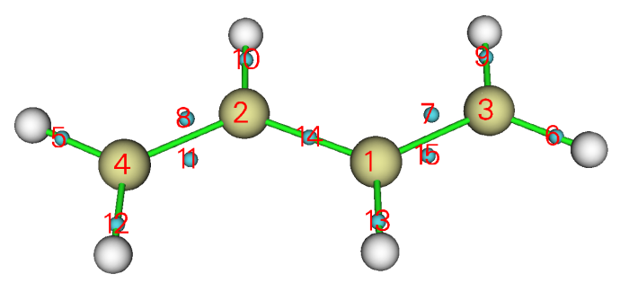
从这张图可以非常清楚地了解生成的 LMO 的分布。每个青色小球是一个鬼原子，代表一个 LMO 的中心。在当前设置下鬼原子的编号从 1 开始，因此图中显示的编号直接对应 LMO 编号。例如，我们想同时显示边界 C-C 键处的两个 LMO，由于标号为 8 和 11 的青色小球位于该键附近，我们在轨道列表中选择轨道 8 显示它，再选择“Show+Sel. isour#2”并选择轨道 11。之后将等值面值改为 0.13，并将绘制风格设为透明，你将看到
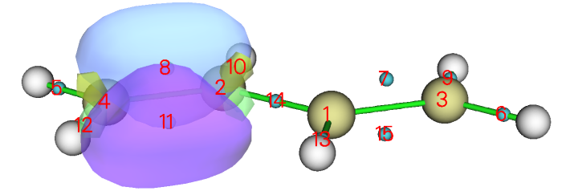
显然，经 Foster-Boys 方法得到的两个 LMO 共同表现了边界 C-C 键的双键特征。这两个 LMO 被称为“香蕉”轨道，不表现出 σ-π 分离特征。
你也可以尝试可视化经 Pipek-Mezey 方法生成的 LMO 的中心位置。由于该方法将每个双键表示为一对分离的 σ 和 π LMO，它们的中心应该非常靠近，从下图可以看到这些中心确实几乎无法区分：
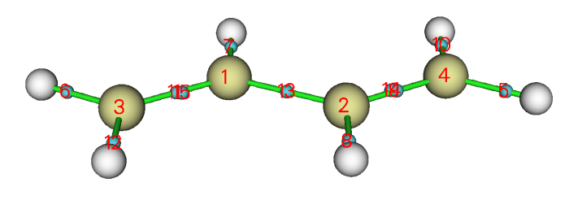
值得注意的是，有两种方法可以快速找到感兴趣化学键对应的 LMO 的编号。第一种是查看轨道定域化过程中打印的轨道成分，第二种是直接可视化 LMO 中心，在适当位置找到青色小球上方显示的编号，正如我刚才演示的。
4.19.2 分析 SN2 反应中定域分子轨道的变化
在本例中，我们研究定域分子轨道 (LMO) 沿反应路径的变化，以直观显示化学键的变化，以一个典型的 SN2 反应为例。
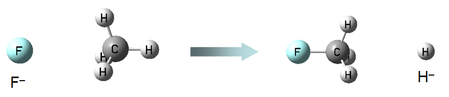
该 SN₂ 反应涉及 F-C 键的形成和 C-H 键的断裂，因此在下面的分析中我们将关注相应的两个 LMO。该 SN₂ 反应的 IRC 如下所示，共考虑了五个点，它们的 .fch 文件已提供在 examples\SN2 文件夹中。
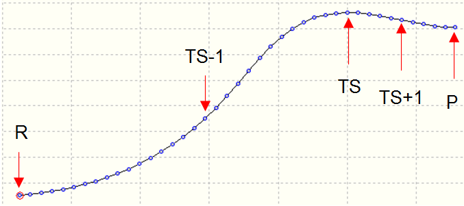
首先，我们为过渡态 (TS) 几何构型生成 LMO。启动 Multiwfn 并输入
examples\SN2\TS.fch
19 // Orbital localization
1 // Localize occupied orbitals
0 // Visualize orbitals可以发现有两个轨道分别对应 F-C 键和 C-H 键，为了便于比较我们将它们画在一起
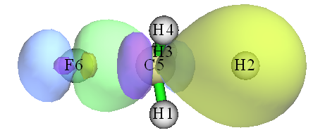
绿-蓝等值面和紫-黄等值面清楚地描绘了分别对应 F-C 键和 C-H 键的轨道。
我们对 R.fch、TS-1.fch、TS+1.fch 和 P.fch 绘制同样的图，再把图放在一起，如下所示
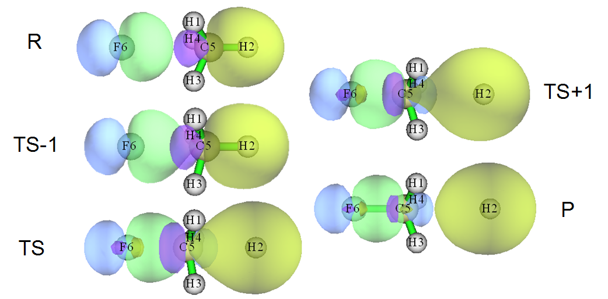
从图中，SN₂ 反应过程中化学键的变化非常清楚(R→TS-1→TS→TS+1→P)。在反应物状态，绿-蓝等值面对应氟原子的孤对电子，而紫-黄等值面表现出 C-H 典型的共价键特征。随着反应进行，两个 LMO 平滑变化，C-F 共价键特征越来越突出，在最终产物状态，紫-黄等值面代表的 LMO 已对应于 H⁻ 阴离子的 1s 轨道。
4.19.3 表征 [Re₂Cl₈]²⁻ 阴离子的 Re-Re 键
人们普遍认为 [Re₂Cl₈]²⁻ 阴离子中的 Re-Re 键是四重键，构型为 (σ²π⁴δ²)。σ 键来自两个铼原子 ${d}_{{z}^{2}-{p}_{z}}$ 杂化轨道的重叠，两个 π 键来自它们的 $d_{\mathrm{xz}}$ 和 $d_{\mathrm{yz}}$ 轨道的重叠，而 δ 键由它们的 $d_{\mathrm{xy}}$ 轨道重叠形成。这一经典概念能否经由轨道定域化分析得到验证？
在 B3LYP 下对 Cl 用 6-31G*、对 Re 用 SDD 得到的 [Re₂Cl₈]²⁻ 阴离子的 .fchk 文件提供为 examples\Re2Cl82-.fchk。将其载入 Multiwfn 并对占据轨道做轨道定域化，从输出中可以立即辨认出对应 Re-Re 键的四个 LMO：
提示
如果想更容易找到对应 Re1-Re2 键的 LMO 的编号，最好的办法是在启动 Multiwfn 之前将 settings.ini 中的 "iprintLMOorder" 设为 1。此后，LMO 的成分将按原子和原子对的顺序打印。
Almost two-center LMOs: (Sum of two largest contributions > 80.0%)
57: 7(Cl) 73.8% 2(Re) 22.5% 58: 10(Cl) 73.8% 2(Re) 22.5%
59: 4(Cl) 73.8% 1(Re) 22.5% 60: 2(Re) 48.1% 1(Re) 48.1%
61: 8(Cl) 73.8% 2(Re) 22.5% 62: 3(Cl) 73.8% 1(Re) 22.5%
64: 1(Re) 45.9% 2(Re) 45.9% 66: 6(Cl) 73.8% 1(Re) 22.5%
67: 9(Cl) 73.8% 2(Re) 22.5% 69: 5(Cl) 73.8% 1(Re) 22.5%
83: 1(Re) 45.9% 2(Re) 45.9% 84: 2(Re) 43.6% 1(Re) 43.6%然后我们进入主功能 0 观察它们(默认等值面值为 0.05)：
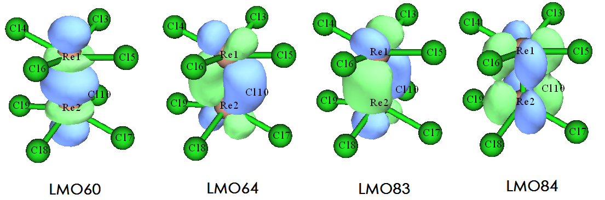
从 LMO 的等值面图可以清楚看出，LMO60 对应 σ 键，LMO64 和 LMO83 对应 π 键，LMO84 对应 δ 键。这一观察支持四重键的说法。
然而，如果计算 Mayer 键级，会发现情况没那么简单。用主功能 9 计算的 Re-Re 键的 Mayer 键级为 2.94，为什么该值明显低于预期的 4.0？
为深入理解，我们用主功能 9 对 Re-Re 键做“轨道占据数微扰 Mayer 键级 (Orbital occupancy-perturbed Mayer bond order)”分析，输出为
Mayer bond order after orbital occupancy-perturbation:
Orbital Occ Energy Bond order Variance
...[Ignored]
60 2.00000 -0.14354 2.001481 -0.935449
...[Ignored]
64 2.00000 -0.12793 2.276388 -0.660542
...[Ignored]
83 2.00000 -0.01749 2.276388 -0.660542
84 2.00000 0.02809 2.466317 -0.470613结果表明，σ LMO 的贡献为 0.935，每个 π LMO 贡献 0.661，δ LMO 贡献 0.471。虽然原则上 Mayer 键级不能被精确分解，但这些数据足以帮助我们理解每个成键 LMO 的相对重要性。显然 σ 键对 Re-Re 键最重要，而 δ 键的重要性相对最低。
现在产生了一个新问题，为什么四个 LMO 对 Re-Re 键 Mayer 键级的贡献不同？用更小的等值面值观察它们的等值面也许能回答这个问题。下面展示了等值面值为 0.01 时四个 LMO 的图形
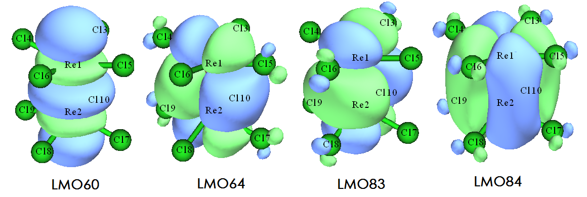
从图中发现，LMO60 基本只分布在两个 Re 原子周围，因此它对 Re-Re Mayer 键级的贡献应接近 1.0。LMO64 和 LMO83 都略微离域到四个 Cl 原子，因此它们并不纯粹表现 Re-Re 键特征，对 Re-Re Mayer 键级的贡献较低。LMO84 离域到全部八个 Cl 原子，自然可以预期它对 Re-Re Mayer 键级的贡献最小。
顺便一提，如果你有兴趣，可以对 Cr₂ 做轨道占据数微扰 Mayer 键级分析，会发现 Mayer 键级几乎恰好为 6.0，且对应 Cr-Cr 键的六个轨道基本每个都贡献 1.0，这主要是因为这些轨道没有离域到任何其他原子上。
4.19.4 基于 CH₃NH₂ 的双中心 LMO 研究键偶极矩
Multiwfn 支持几种计算键偶极矩的方法，如4.A.11 节所述。本节以 CH₃NH₂ 为例，说明基于双中心 LMO 可以研究键偶极矩，它在某种程度上反映键极性。相关理论介绍见3.22 节。
启动 Multiwfn 并输入
examples\CDA\CH3NH2\CH3NH2.fch
19 // Orbital localization
-8 // Switch status of “If calculating center position and dipole moment of LMOs” to “Yes”
1 // Localize occupied orbitals
y // Perform dipole moment analysis for the LMOs此时当前目录下已生成 LMOdip.txt，在该文件中可以找到以下内容，它们是用3.22 节“专题 3”所示的特殊方法计算的：
Single-center orbital dipole moments (a.u.):
1 ( 5N ) X/Y/Z: -0.04465 0.01500 0.00001 Norm: 0.04710
2 ( 1C ) X/Y/Z: 0.00010 0.00014 0.00000 Norm: 0.00017
9 ( 5N ) X/Y/Z: -1.28448 0.41598 0.00001 Norm: 1.35016
Sum X/Y/Z: -1.32903 0.43112 0.00001 Norm: 1.39721
Two-center bond dipole moments (a.u.):
3 ( 5N - 6H ) X/Y/Z: -0.08951 -0.20801 0.30542 Norm: 0.38021
4 ( 1C - 4H ) X/Y/Z: -0.06753 0.08375 -0.00000 Norm: 0.10758
5 ( 5N - 7H ) X/Y/Z: -0.08950 -0.20802 -0.30543 Norm: 0.38022
6 ( 5N - 1C ) X/Y/Z: 0.17708 0.25312 -0.00000 Norm: 0.30891
7 ( 1C - 3H ) X/Y/Z: 0.08532 0.06534 -0.09566 Norm: 0.14387
8 ( 1C - 2H ) X/Y/Z: 0.08532 0.06534 0.09566 Norm: 0.14387
Sum X/Y/Z: 0.10119 0.05152 -0.00001 Norm: 0.11355进入主功能 0 后，可以看到下图
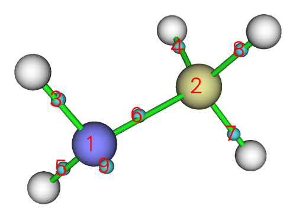
对照该图和 LMOdip.txt 的内容，可以发现分别对应 N5 和 C1 内层轨道的 LMO1 和 LMO2 极性可忽略不计(即“norm”基本为零)，反映 LMO 中心非常靠近原子核位置。LMO9 对应 N5 的孤对电子轨道，其“norm”高达 1.35 a.u.，表明 LMO 中心明显偏离 N5 原子核。LMO3 和 5 对应 N-H 键，LMO4、7 和 8 对应 C-H 键，众所周知 C-H 的极性应低于 N-H，这一点被它们“Norm”值的差异很好地反映出来。对应 C-N 键的 LMO6 的“Norm”为 0.3089，很好地表明 C-N 是极性键这一事实。
此外，在当前体系中 N5 和 C1 的 Y 坐标分别为 -1.438 和 1.330 Bohr。LMO6 的键偶极矩的 Y 分量为 0.253，是明显的正值。这一观察表明负、正电荷中心分别位于 N5 和 C1 一侧，与氮的电负性大于碳的事实相符。